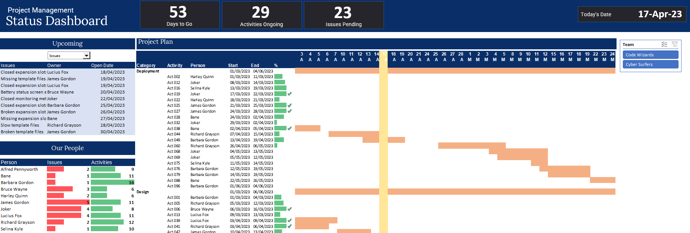
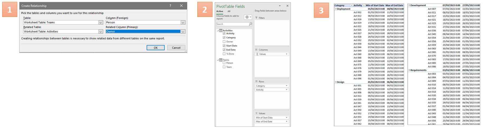
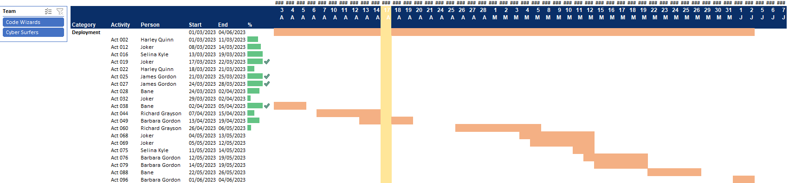
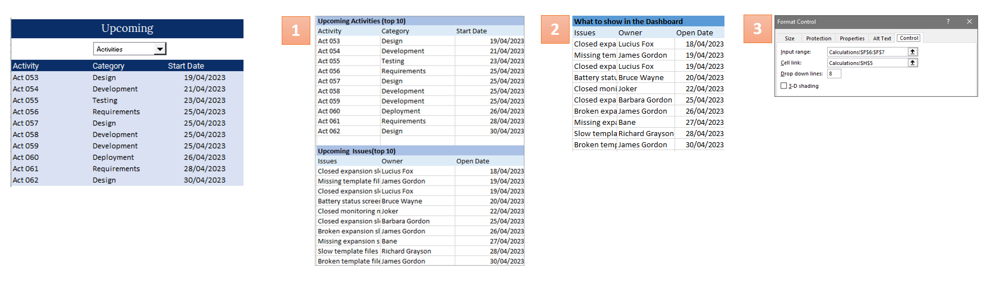
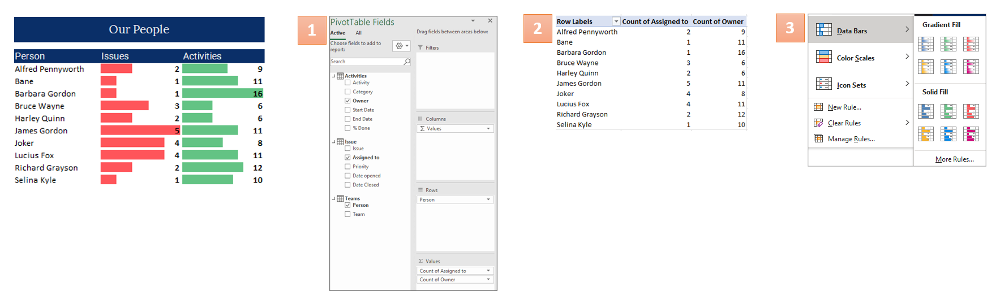
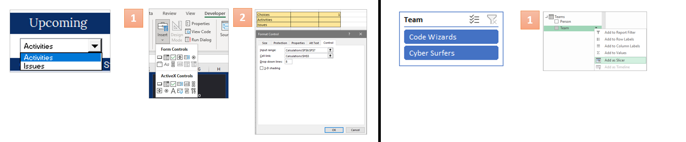
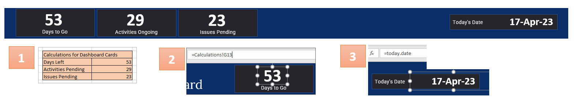

Project Management Status Report
This is a Personal Project to exercise my knowledge and skills in advanced Excel. This project management report comprises of an interactive dashboard offers essential metrics, upcoming activities, KPIs, and a Gantt chart, facilitating easy task management and providing insights into individual contributions. Moreover, tmarnahhhe information in this project is dummy data and are used solely to showcase a sample of the report.
Excel Interactive Dashboard
This project management report created in Excel features an interactive dashboard with four distinct components. The first part includes a set of number tiles that display essential project metrics at a glance. The second part is a table that shows the upcoming activities and pending issues for each project, allowing users to easily stay on top of their tasks. The third component is a KPI table that showcases the performance of each project member, providing valuable insights into individual contributions. The final part is a project status Gantt chart that offers an overview of each project's progress. The interactive nature of the dashboard is enhanced by its ability to toggle between a list of upcoming activities or issues and a slicer for choosing the progress of each project team. This dashboard offers an accessible and user-friendly way to track the status of projects and make informed decisions.
Methodology
Pivot Table
Created a pivot table that involved connecting the "teams" and "activities" reference tables through the "persons" column. Start and end dates were added as minimum and maximum values, and the "category" and "activities" columns were included to categorize the results. The end result was a table that displayed activity numbers, individual start and end dates, and categories.
Gantt Chart
To create the Gantt chart, the prepared pivot table was linked to a vertical axis on a separate sheet. Progress percentages were converted to progress bars using conditional formatting, and a timeline calendar was created as a horizontal axis. Formulas were used to determine whether activities were ongoing, with true cells colored light orange and false cells left blank. Finally, conditional formatting was used to highlight today's date on the timeline. The resulting chart provides an overview of each activity's completion status and whether projects are on schedule.
Progress Charts
Upcoming Chart
To create the "Upcoming Chart", two tables were first created for the top 10 ongoing activities and top 10 pending issues on the calculations sheet. These tables were then used to generate a dashboard display table that could switch between the list of activities and issues based on user selection through a drop-down menu. The drop-down selection was created with input and cell link in developer mode.
These were the formulas used:Upcoming Activities: =INDEX(FILTER(Activities,Activities[Start Date]>today.date),SEQUENCE(10),{1,2,4})Pending Issues: =INDEX(FILTER(Issue,Issue[Date opened]>today.date),SEQUENCE(10),{1,2,4})Dashboard Table: =INDEX(FILTER(Issue,Issue[Date opened]>today.date),SEQUENCE(10),{1,2,4})
People Chart
To create "People Chart", the linking of the "Activity" and "People" tables was made by using the relationship option. A pivot table was created to count "Assigned To" for activities and "Owner" for issues. Data bars were added via conditional formatting, and the table was copied to the dashboard.
Dashboard with Filters
To create an interactive dashboard, two filters were added: a drop-down for the Upcoming Chart and a slicer for the Gantt Chart. A combo box was inserted using the developer's tab and linked to a calculation sheet with the two drop-down options. This method allows for dynamic and user-friendly data exploration.
To create a slicer for the Gantt Chart, the pivot table field was opened, and the team table was selected and added as a slicer by right-clicking. The slicer was then linked to the dashboard, allowing for easy filtering of the Gantt Chart.
Dashboard with Number Cards
Creating number cards for a dashboard involves setting up a new table in the calculations sheet with formulas to calculate days left for projects, pending activities, and issues. Cards were designed, labeled, and linked to the table's values, including today's date.
These were the formulas used:Days Left: =MAX(Activities[End Date]-today.date)Activities Pending: =COUNTIFS(Activities[Start Date],"<="&today.date,Activities[% Done],"<1")Issues Pending: =COUNTIFS(Issue[Date Closed],"")